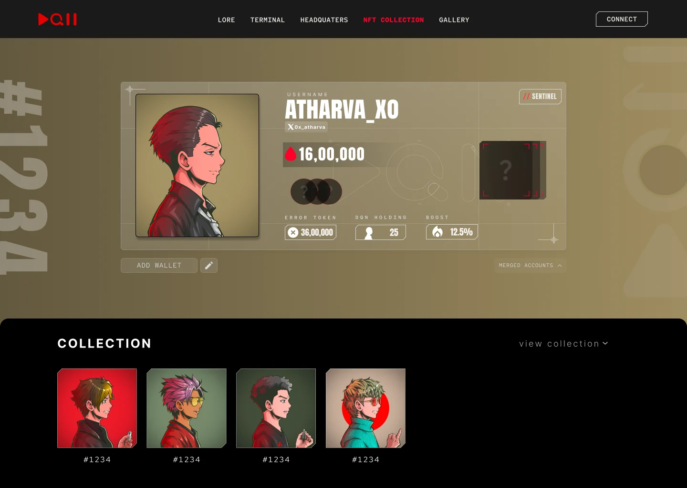
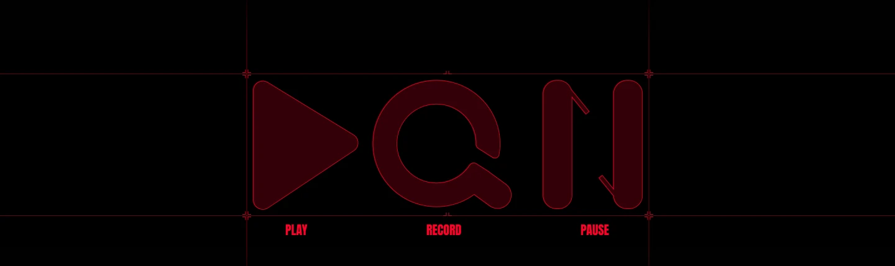
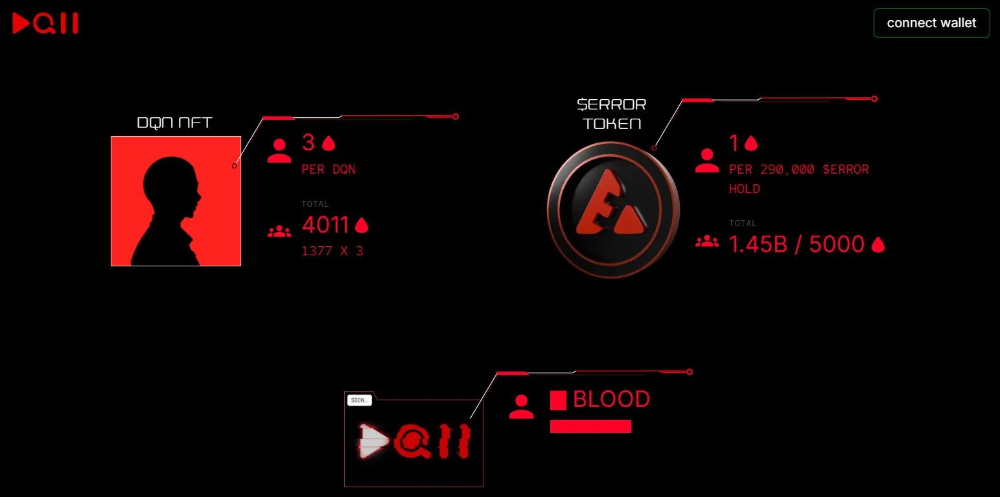
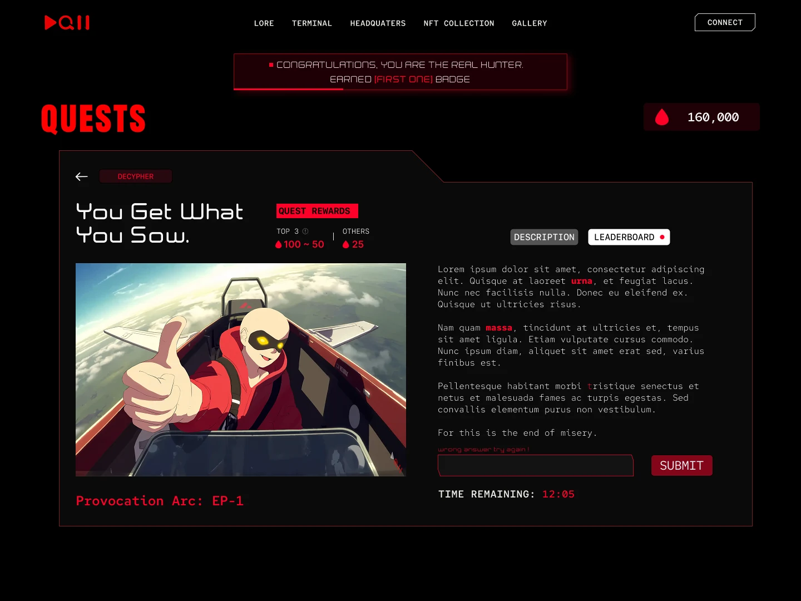
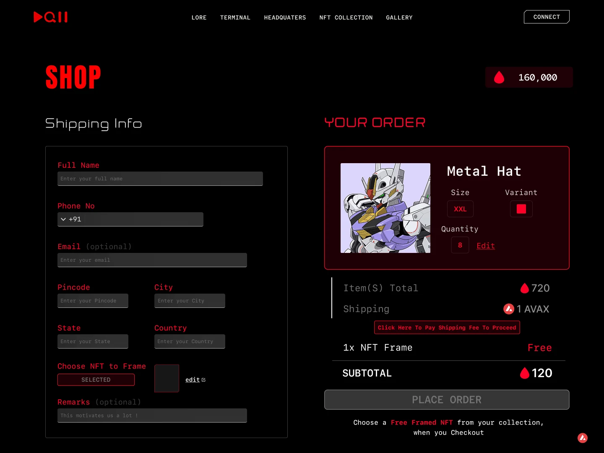
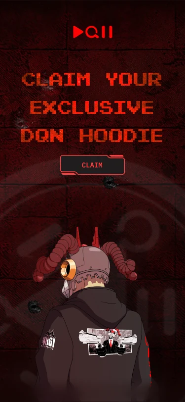
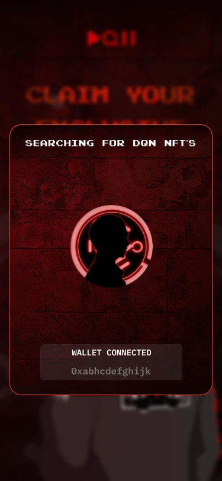
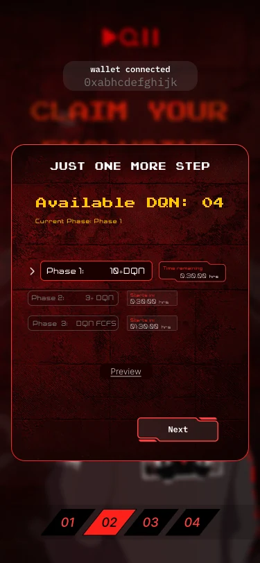
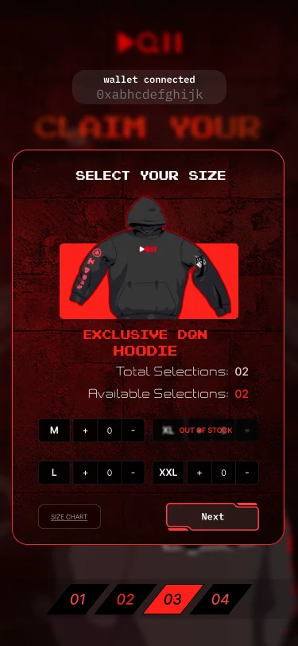
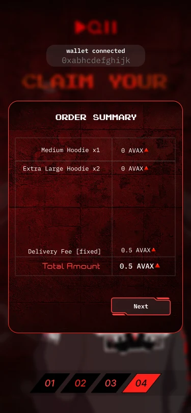

Building the DQN ecosystem
DQN had a homepage and a loyal NFT community, but no product behind it. As Design Lead, I designed the platform holders actually use: the BLOOD loyalty system, profiles, quests, a multi-token shop and a limited merch claim, all on one state-driven design system.

Presale and active users from DQN's launch period, Feb – Jun 2025. Followers combine @DQNorg (20.5K), @dqn404 (20.7K) and @dqn_anime (586), checked Oct 2026.
A cyberpunk IP with a community to serve
DQN is a cyberpunk story world that started as an NFT collection on Avalanche. Holders collect characters, earn an in-world token called BLOOD, solve quests and buy physical and digital goods. The brand is dark, red and tactical: play, record and pause glyphs make up its logo.
Inside the world, AI-404 is DQN's in-world AI agent, the voice of the $ERROR token, and it announces every launch to the community on X.
The IP is now becoming an anime. DQN Anime premieres in 2026, created by Kushagra Kushwaha (@dqn4861), an Indian anime artist in Tokyo whose credits include JoJo's Bizarre Adventure: Stone Ocean, and produced by Morphic, the studio founded by Polygon co-founder Jaynti Kanani. Its trailers have passed 300K YouTube and 600K Instagram views. Read the announcement.

actions
planning
deliberation
The homepage existed. The product didn't.
When I joined in February 2025, holders could look at DQN but not use it. There was nowhere to see what you owned, nothing to do, and no way to spend the BLOOD token. Five problems stood between the community and a real product.
- P1
No shared product language
Each surface felt like a different site. In a product that holds people's money and identity, inconsistency reads as untrustworthy.
- P2
Ownership was invisible
Holders owned NFTs, but nothing in the experience showed or celebrated that.
- P3
Blockchain state was hard to read
Wallet status, token balances and slow on-chain confirmations all needed to be understood at a glance.
- P4
Two currencies at checkout
People could pay in AVAX, in BLOOD, or a mix of both, which is a lot to hold in your head while spending.
- P5
Limited drops left no room for error
Timed claims had to move people through wallet, eligibility, claim, signature and confirmation without a single confusing step.
- Product direction and information architecture
- Design system architecture, from tokens to states
- The BLOOD system, DQN's loyalty currency
- Profile, the identity and ownership surface
- Quest flows, including failure and rate-limit states
- Shop checkout and the limited hoodie claim
- Engineering handoff with the Next.js and TypeScript team; I also built some limited-time event front ends myself
- On-chain actions are slow and can partly fail
- Wallet providers behave inconsistently
- Tight launch dates and a small team, so high individual ownership
- The brand had to feel premium cyberpunk, never flashy or gimmicky
- Everything had to scale to future quests, drops and game mechanics
Digital identity + game progression + financial wallet
A design system built on states
In Web3, people rarely fail because a screen is ugly. They fail because they can't tell what state they're in. So before designing pages, I defined the states every component had to express, then built tokens and components around them.
Loading
Reading the wallet or chain. Never a blank screen.
Connected
Wallet linked, balances shown, actions unlocked.
Pending
Signed and waiting for the chain. Progress stays visible.
Success
Confirmed, with what changed and what to do next.
Error
What went wrong in plain words, and how to recover.
Tokenised colour and type, state-driven components, transaction-aware patterns and reusable NFT display components, all in Figma.
Every new Web3 feature adds new states. Without a system, each one gets designed from scratch and the product fragments within weeks.
New quests and drops reused existing parts, the product kept one identity, and handoff to engineering became predictable.
The BLOOD system
BLOOD is DQN's loyalty currency, and I designed the system behind it. It turns everything you hold into one number: every DQN NFT earns 3 BLOOD, and every 290,000 $ERROR held earns 1. It launched on 24 March 2025 through AI-404 as the first way into the DQN network.

One currency fed by two kinds of holding, with the earning rule printed right beside each source, so anyone can work out their own balance.
Holders split assets across wallets. Two weeks after launch, multi-wallet linking merged BLOOD from every wallet into one profile under your X username.
BLOOD started gating real things: a partner reserved presale spots for BLOOD holders, and shop items were priced in BLOOD.
Making ownership visible
The profile took the most iterations because it had to do two jobs at once: show who you are and show what you own. I designed it around four questions a holder asks: what's my status, what do I hold, who am I here, and how am I progressing?
- NFT identity cardYour character is your avatar, framed like a collectible.
- BLOOD balanceThe in-world currency, the largest number on the page.
- Role badgeStatus such as Sentinel, shown like rank insignia.
- Token holdingsERROR token, DQN held and boost in one scannable row.
- Merged accountsSeveral wallets combined into one identity, synced to your X username.
- Collection previewOwned NFTs one tap away from the profile.
Ownership should feel emotional, not just numerical.
Time pressure without panic
Quests are timed puzzles and cryptographic riddles tied to the story, with BLOOD rewards and a leaderboard. The hard part was the wrong answer: keeping people motivated while stopping brute-force guessing.

Signing to prove a wallet and paying to spend tokens looked identical in most dApps. I gave them different visual treatments so nobody thought a riddle answer cost money.
The countdown stays in view beside the answer field, so urgency comes from the clock, not from alarming colours or copy.
A wrong answer gets a quiet warning and the attempt is counted. Repeated guessing triggers a rate limit that explains when you can try again.
One summary, many currencies
This was the hardest UX problem in the product. Most people don't intuitively understand paying with more than one token at once, and confusion at checkout means drop-off and support tickets. In the live DQN Print drop, each unit could be paid in BLOOD, in $ERROR or in a mix, with shipping in AVAX.

A single order summary
Every line shows its own token, then one subtotal brings them together, so the total is never a mental sum.
Token colour and icon, everywhere
BLOOD always appears as the red drop and AVAX always as its mark, in the summary, buttons and balances.
Pay the fee first, then order
The AVAX shipping fee is a clear separate step before Place Order unlocks, so nothing is charged by surprise.
Visible transaction state
Confirmation, insufficient balance and post-payment states each have their own screen or toast, built from the system's states.
A reason to come back
Holders can frame one of their own NFTs free with an order, which ties the shop back to the collection.
The hoodie claim
A free merch drop for holders at drop.dqn.red, designed mobile-first and launched on 1 February 2025. The key decision: the final wallet signature represents claiming, not paying, so "I'm authorising" never feels like "I'm spending."

01ClaimOne clear call to action on the drop page.

02Eligibility scanThe wallet is checked for DQN NFTs while the address stays on screen.

03Phased allocation10+ DQN got 2 free, 3+ got 1 free, then first come, first served, each phase on its own timer.

04Size selectionSteppers cap picks at your allocation, and sold-out sizes say so.

05Summary, then signHoodies show as free; only the fixed delivery fee is charged.
Every flow, launched to the community
- View on X ↗
Hoodie claim goes live
Phased by holdings at drop.dqn.red: 10+ DQN get 2 free, 3+ get 1 free, then first come, first served.
- View on X ↗
BLOOD system activated
First access to the DQN network: connect your wallet and your holdings become BLOOD.
- View on X ↗
Multi-wallet profiles
Link several wallets to one DQN profile, with BLOOD unified under your X username.
- View on X ↗
BLOOD unlocks a partner presale
AIVA reserved presale spots for BLOOD holders, the currency's first outside utility.
- View on X ↗
DQN Print drop in the shop
300 framed prints of holders' own NFTs, max 3 per person, paid in BLOOD, $ERROR or a mix, with AVAX shipping.
Shipped, used in real drops, loved by holders
- Profiles, quests, leaderboard, events and the shop shipped to production
- Checkout and claim flows ran in real drops
- $300K+ organic presale and 6,000 active users at launch
- 41K+ followers across DQN's X accounts; strong praise in Discord, high engagement during events
- Fewer UI rebuild cycles
- Faster component reuse for each new quest and drop
The ecosystem design far exceeded our expectation
After DQN, I went on to lead design at Bango.fun, the prediction market Tanuj founded next.
What I'd keep, change and do next
- Ship core flows first, polish later
- Deferred: a deep animation system
- Deferred: a formal accessibility audit
- Deferred: an onboarding education layer
- Usability-test claim vs payment clarity with real holders
- Grow profiles into a social identity layer
- More real-time transaction feedback
- Blockchain UX is state-first design
- Ecosystem products need a system from day one
- Ownership psychology matters as much as usability
- Signing and paying must look different